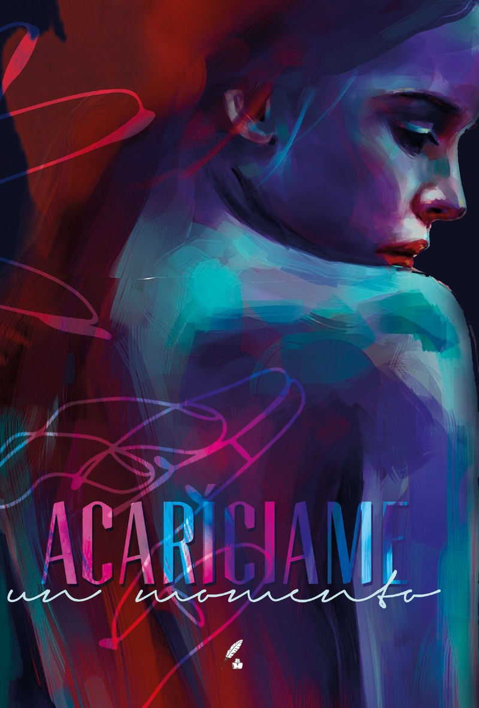
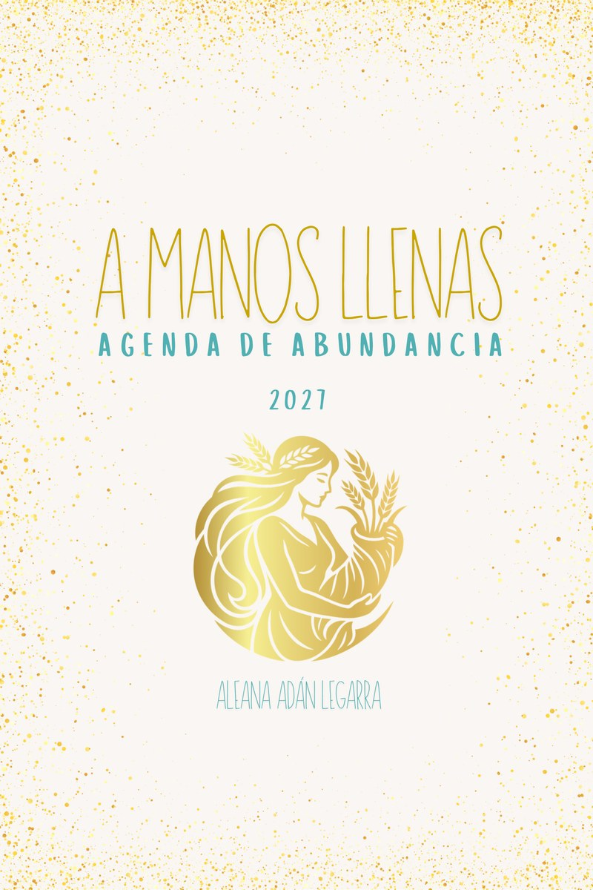
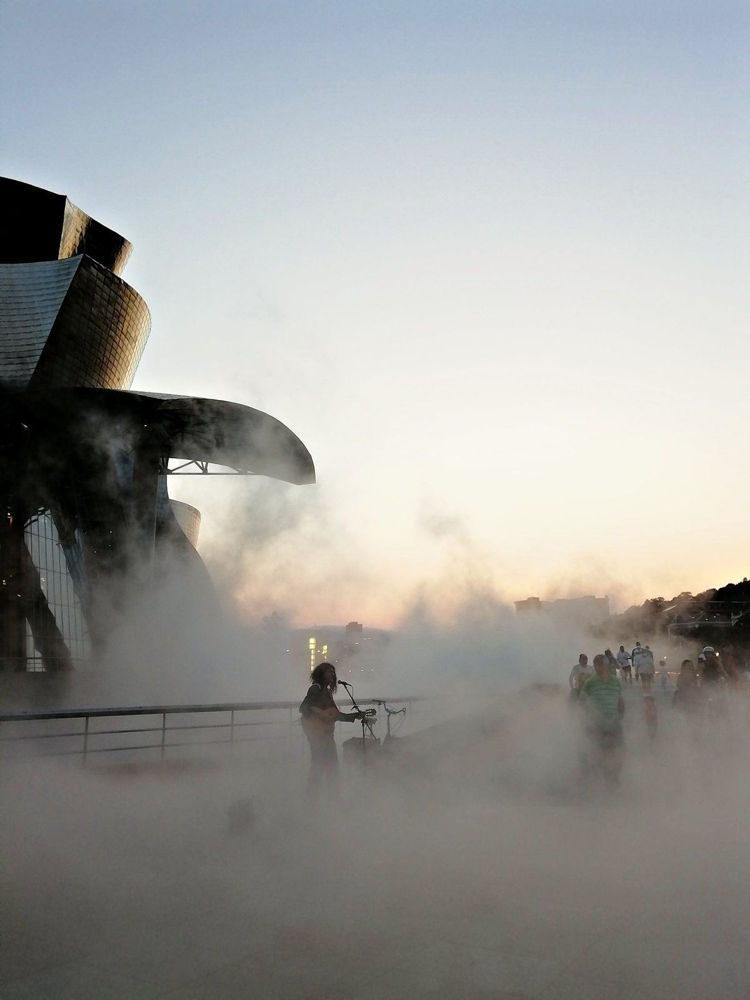
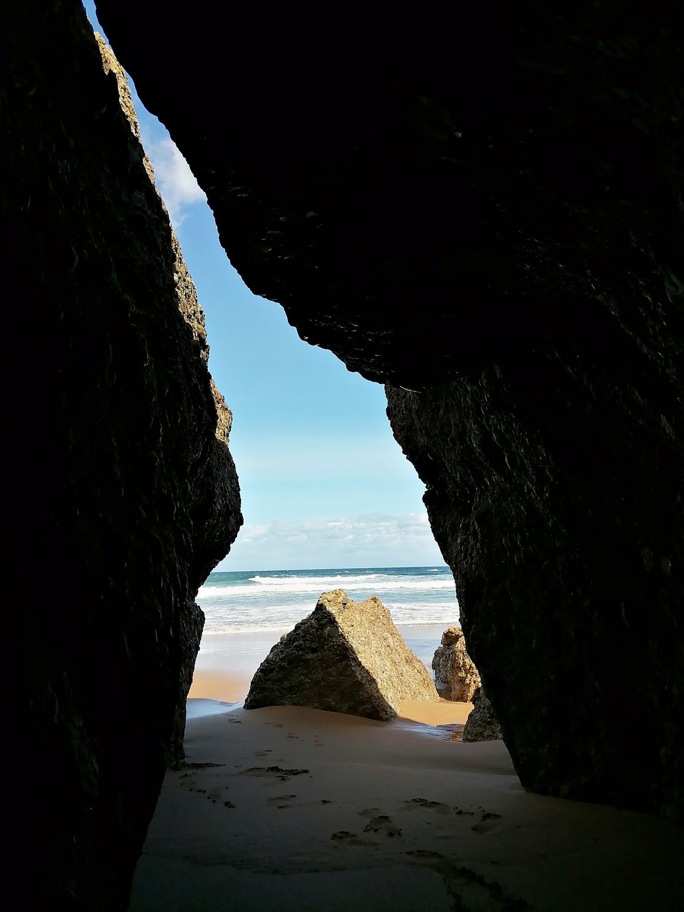
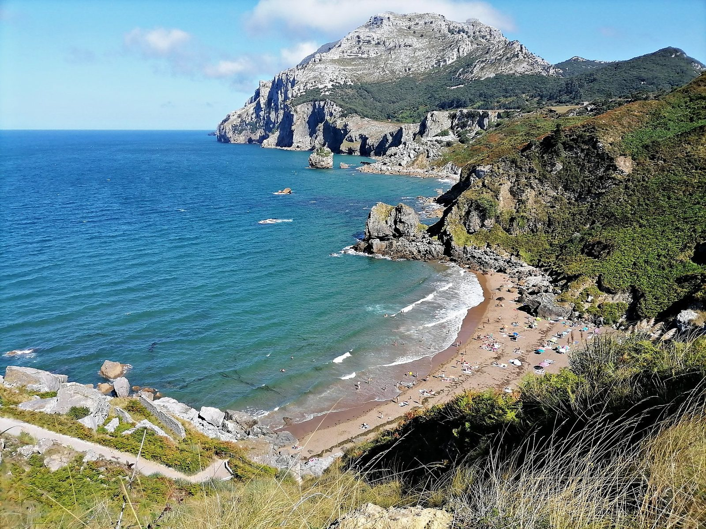

Soledad
He aprendido a vivir contigo, Soledad,
a intoxicarme con tu acre aliento,
y a rendirme culta en tu desierto,
porque eres mi sombra más fiel.
Escribo porque siento y siento porque existo.
He aprendido a vivir contigo, Soledad,
a intoxicarme con tu acre aliento,
y a rendirme culta en tu desierto,
porque eres mi sombra más fiel.
Entre los muros que me recuerdan
cada error, cada deseo, cada verdad,
aprendo a nombrarme sin miedo.
No hay tiempo para ser pequeña
cuando la vida pide ser cantada.
Escribo para sostener mi luz.
Retazos de la belleza que me habita
Pasa las páginas lento: poemas, relatos, reflexiones y pensamientos sueltos en esta suerte de papel.
Publicaciones

Novela contemporánea · Julio · 2026
Ainhoa Ibárruri tiene treinta y cinco años, un embarazo de seis meses y una bisabuela muerta que se le aparece en el cementerio el día del entierro.
Las mujeres de esta casa es una novela sobre lo que heredamos sin pedirlo, lo que aceptamos y lo que elegimos soltar para escribir una historia propia.
Cuando termines de leer, habla con tu madre, aunque ya no esté.
ComprarVer reseñas
Antología de relatos y poesía romántico-erótica
Antología de relatos y textos románticos, cuyas páginas te harán redescubrir el amor bajo nuevas perspectivas.
Con textos de Nicauly Morales, Aleana Adán Legarra, Lia, Primavera Gómez, Yolfer Pau, Manuela Castellote López y más.
ComprarVer másLibros de colorear
También tengo libros de colorear, disponibles en mi tienda y en mis redes sociales.
ContactarAgenda de abundancia · 2027

¡Mereces vivir este 2027 a manos llenas! Con esta agenda quiero que te sientas merecedora de esa abundancia que eres, aunque las circunstancias te inviten a dudar.
Conocer la agenda
Sobre mí
Admiro enormemente la inteligencia y la humildad de los animales, disfruto sentarme a leer sin prisa, bailar a destiempo, caminar descalza y respirar profundo. Me rindo ante la belleza y quizá por eso hoy escribo y fotografío sin otra intención que la de vivir más fielmente.
Nací en Venezuela en 1984 y llevo todas estas décadas entregándome a la tarea de conocerme y permitirme existir en plenitud. Salí de la Universidad Central de Venezuela, estudié Música y tengo la costumbre de lanzar un nuevo proyecto cuando la energía de mis ideas es lo bastante grande como para volverse palabra, mirada o música.
A veces juego a ser fotógrafa




© Aleana Adán Legarra. Imágenes protegidas por derechos de autor.
Hablemos